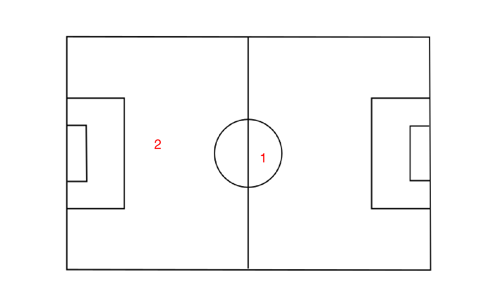

Mixture of Regressions as their name suggest fit several regression models at the same time and try to extract a partition where different regression models holds for each subsets. Formally, the Bayesian version of this model with invariant priors is given by the following generative model.
\[ \begin{align} \pi &\sim Dirichlet(\alpha)\\ Z_i &\sim \mathcal{M}(1,\pi)\\ V_k &\sim \mathcal{W}(\varepsilon^{-1},n_0)\\ A_k|V_k,X &\sim \mathcal{MN}(0,(V_k)^{-1},\tau X^{t}X)\\ Y_{i.}|X_{i.},Z_{ik}=1 &\sim \mathcal{N}(A_kx_{i.},V_{k}^{-1}) \end{align} \] with \(\mathcal{MN}()\) the matrix normal distribution and \(\mathcal{W}()\) the Whishart distribution. The prior parameters may therefore have an impact on the results and they can’t be non-informative. The main prior parameters to look at are \(\tau\) and \(\varepsilon\). \(\tau\) define the strength of the regularization applied on the regression problem, by default it equals \(0.01\), \(\varepsilon\) and \(n_0\) define the prior for the noise co-variance matrix. By default, it will be equal to 0.1 time the variance of the regression residuals with only one cluster and \(n_0\) is fixed by default to \(d\) the dimension of \(y\) for the prior to be as uninformative as possible.
To introduce this model we will use a small toy artificial dataset from the flexmix package. The dataset correspond to two groups. One with a linear relationship between \(x\) and \(y\) and a second with a quadratic relationship between \(x\) and \(y\) :
data("NPreg", package = "flexmix")
ggplot(NPreg)+geom_point(aes(x=x,y=yn,color=factor(class)))+theme_bw() To fit a mixture of regression model with greed, you must provide a data.frame and a MoR model. To build such a model, we simply use the MoR function which has one mandatory argument, the formula of the supposed regression model. In our toy case, we may thus use the following line of code to fit the clustering model using a polynomial regression model of degree two:
sol=greed(NPreg,model=MoR(yn ~ x + I(x^2)))
#> ------- MOR model fitting ------
#> ################# Generation 1: best solution with an ICL of -675 and 2 clusters #################
#> ################# Generation 2: best solution with an ICL of -675 and 2 clusters #################
#> ------- Final clustering -------
#> ICL clustering with a MOR model, 2 clusters and an icl of -675.As expected the partition with two cluster that was used to simulate the data is recovered by the algoritthm. When, the clustering is performed, we may use the classical functions clustering,coef,prior,plot,... to explore the results. We may start by comparing the found clustering with the true labels :
cl = clustering(sol)
table(cl,NPreg$class)
#>
#> cl 1 2
#> 1 4 95
#> 2 96 5Look at the value used for the prior parameters :
prior(sol)
#> An object of class "MoR"
#> Slot "formula":
#> yn ~ x + I(x^2)
#>
#> Slot "tau":
#> [1] 0.1
#>
#> Slot "N0":
#> [1] 1
#>
#> Slot "epsilon":
#> [,1]
#> [1,] 16.88241
#>
#> Slot "alpha":
#> [1] 1Extract the MAP model coefficient for further use :
params = coef(sol)
params
#> $pi
#> [,1]
#> [1,] 0.495
#> [2,] 0.505
#>
#> $A
#> $A$cluster1
#> yn
#> (Intercept) 13.1174518
#> x 9.0869207
#> I(x^2) -0.8937919
#>
#> $A$cluster2
#> yn
#> (Intercept) -0.34915014
#> x 4.43302075
#> I(x^2) 0.03143444
#>
#>
#> $Sigmak
#> $Sigmak$cluster1
#> yn
#> yn 11.94844
#>
#> $Sigmak$cluster2
#> yn
#> yn 11.11285And plot prediction line of the fitted sub-models:
df.pred = data.frame(x=seq(0,10,length.out=200))
X=model.matrix(~ x +I(x^2),df.pred)
df.mpred = data.frame(sapply(params$A,function(A){X%*%A}))
names(df.mpred)=c("cluster1","cluster2")
df.mpred$x = df.pred$x
ggplot(NPreg)+
geom_point(aes(x=x,y=yn,color=factor(class)))+
geom_line(data=df.mpred,aes(x=x,y=cluster1))+
geom_line(data=df.mpred,aes(x=x,y=cluster2))+
theme_bw()For this example we will use the Fifa dataset and take a subsample of 2000 players:
data("Fifa")
Xreg=Fifa %>%
filter(value_eur>0) %>%
sample_n(2000) %>%
mutate_if(is.character,as.factor)We will try to predict the log of the player value from it’s age and ability scores. We therefore define the model and run the clustering in a similar fashion as previously:
reg_formula <- log(value_eur) ~ age + pace + shooting + dribbling + passing + defending + physic
mod_reg = MoR(reg_formula)
sol=greed(Xreg,mod_reg)
#> ------- MOR model fitting ------
#> ################# Generation 1: best solution with an ICL of -2286 and 2 clusters #################
#> ################# Generation 2: best solution with an ICL of -2272 and 2 clusters #################
#> ################# Generation 3: best solution with an ICL of -2265 and 2 clusters #################
#> ################# Generation 4: best solution with an ICL of -2265 and 2 clusters #################
#> ------- Final clustering -------
#> ICL clustering with a MOR model, 2 clusters and an icl of -2265.The clustering found has two clusters, if we look at the regression models parameters :
cl=clustering(sol)
co=coef(sol)
co$A
#> $cluster1
#> value_eur
#> (Intercept) 2.4230651664
#> age -0.0586434660
#> pace 0.0009633916
#> shooting 0.0345381665
#> dribbling 0.0925549816
#> passing 0.0144326502
#> defending 0.0109946672
#> physic 0.0326038543
#>
#> $cluster2
#> value_eur
#> (Intercept) 1.668318465
#> age -0.085947408
#> pace 0.003091991
#> shooting 0.002402687
#> dribbling 0.013161986
#> passing 0.004511852
#> defending 0.146114737
#> physic 0.032077264The two regression model extracted are quite different, one has an important weight for the defending ability and the physic. Whereas the player’s value is more influenced by the dribling and shooting capabilities in the other regression model. The clustering seems therefore to have extracted two submarkets one for more defensive players and one for the other players. This can be confirmed by looking at the average position of the players of the two groups on the field:
data("Fifa_positions")
Xreg$cluster=clustering(sol)
pos_clust_mean = Xreg %>% group_by(cluster) %>% summarize(x=mean(pos_x),y=mean(pos_y))
library(ggpubr)
ggplot(pos_clust_mean)+background_image(Fifa_positions$bg_img)+geom_text(aes(x=x,y=y,label=cluster),size=5,col="red")+
coord_fixed(ratio=1)+
scale_x_continuous(limits=c(0,203.2),expand = c(0,1))+
scale_y_continuous(limits=c(0,101.6),expand = c(0,1))+theme_void()